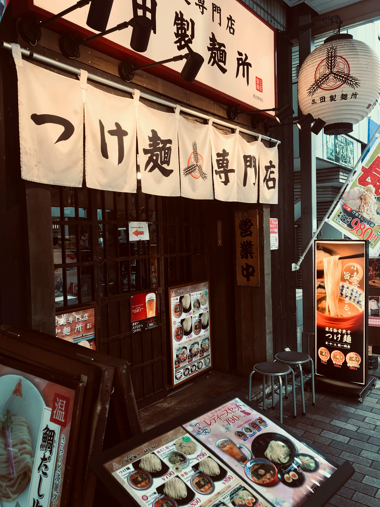

Grandes Atrações Culinárias

Kenjiro Tanaka
Mestre em Lamen Tradicional
Trazendo diretamente de Kyoto os segredos de um caldo Tonkotsu envelhecido e aperfeiçoado por três gerações da sua família.

Izakaya Fogo & Sabor
Restaurante Convidado
A autêntica experiência da comida de rua de Osaka. Especialistas em espetinhos Yakitori na brasa e porções de Takoyaki fumegante.

Hikaru Morita
Especialista em Alta Culinária
Estrela em ascensão em Tóquio, a chef Hikaru apresentará uma abordagem moderna e artística para a criação de sushis e sashimis.